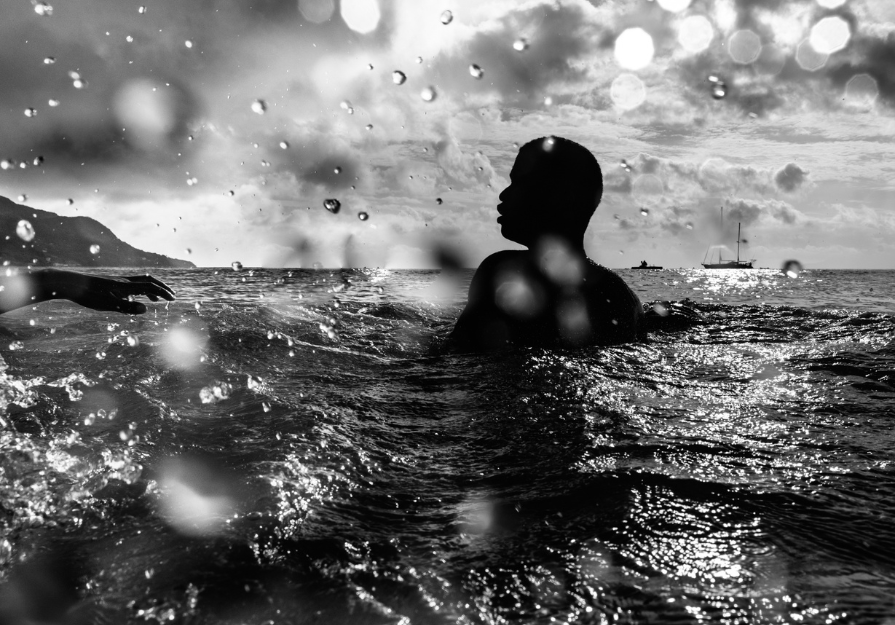

The Closing Reception of Every Man is an Island by Natasha Moustache
Metaphysical poet John Donne famously wrote, “No man is an island, entire of itself,” in his 1624 meditation on the interconnectedness of humanity. In Every Man is an Island, artist Natasha Moustache turns this idea inward, asking what it means to exist both within and apart. To belong to a place that embodies solitude and connection at once.
The Seychelles Islands, an archipelago of 115 islands scattered across the Indian Ocean, embody this paradox. In Moustache’s black and white photographs, the island emerges not as a place apart, but as a living communion of body and spirit, humanity and nature, self and divine. Each image becomes a quiet testament to the ways in which life here is interwoven with the elements — water, wind, light, and faith.
Within this constellation of islands, humanity is held tenderly by the microcosm of the islands themselves, a mirror reflecting the vast, interconnected universe beyond.